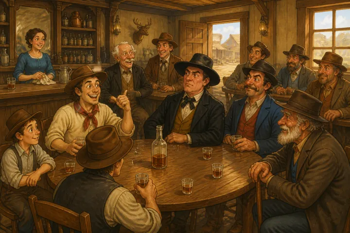
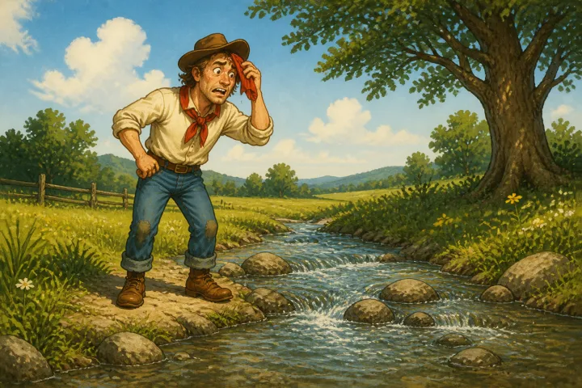
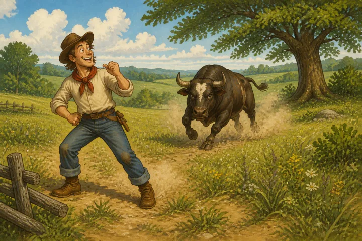
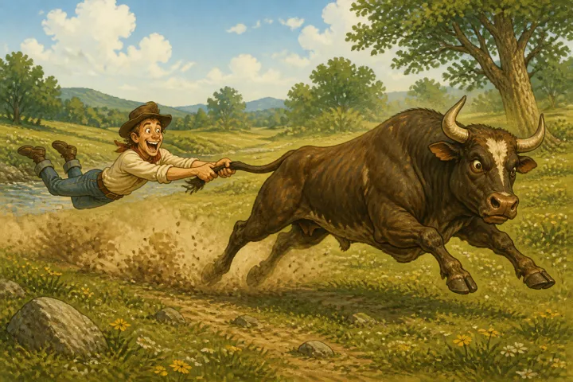
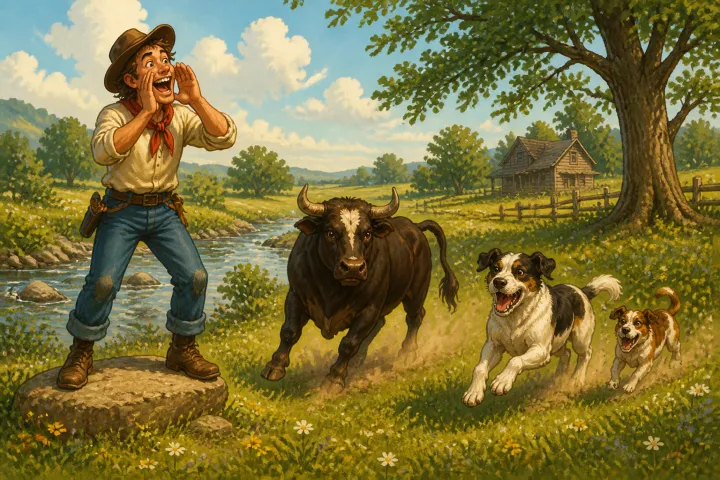
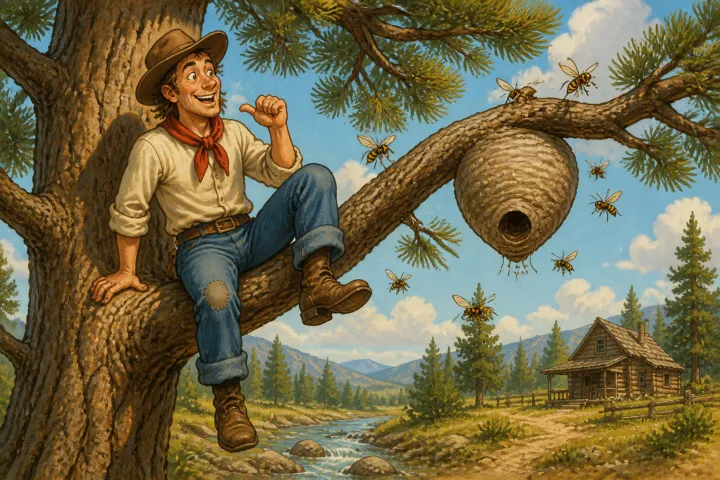
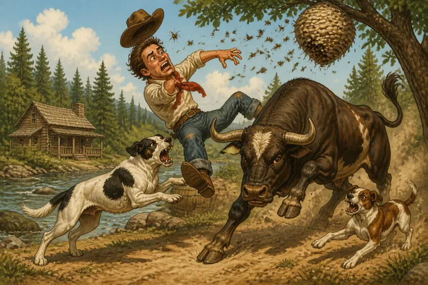
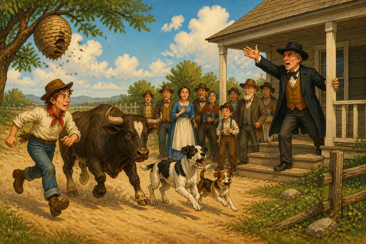
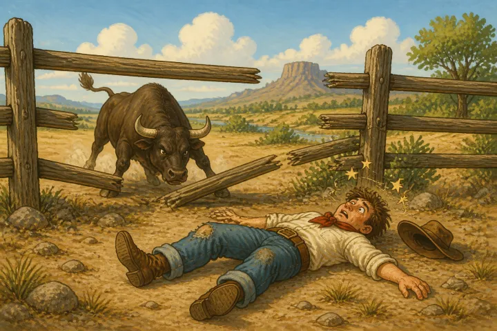

MIKE FINK IN A TIGHT PLACE.
Mike Fink, a notorious Buckeye-hunter, was contemporary with the celebrated Davy Crockett, and his equal in all things relating to human prowess. It was even said that the animals knew the crack of his rifle, and would take to their secret hiding-places, on the first intimation that Mike was about. Yet strange, though true, he was but little known beyond his immediate “settlement.”
When _we_ knew him he was an old man—the blasts of seventy winters had silvered o’er his head, and taken the elasticity from his limbs; yet in the whole of his life was Mike never worsted, except upon one occasion. To use his own language, he never “gin in,” used up, to anything that travelled on two legs or four, but once.
“That _once_ we want,” said Bill Slasher, as some dozen of us sat in the bar-room of the only tavern in the “settlement.”
“Gin it to us now, Mike; you’ve promised long enough, and you’re old
now, and needn’t care,” continued Bill.
“Right, right, Bill,” said Mike; “but we’ll open with a _licker_ all around fust, it’ll kind o’ save my feelin’s I reckon.”
“Thar, that’s good. Better than t’other barrel, if anything.”
“Well, boys,” commenced Mike, “you may talk o’ your scrimmages, tight
places and sich like, and subtract ’em altogether in one all-mighty big ’un, and they hain’t no more to be compared to the one I war in, than a dead kitten to an old she-bar, I’ve fout all kinds of varmints, from a Ingun down to a rattlesnake, and never was willin’ to quit fust, but this once, and t’was with a bull!
“You see, boys, it was an awful hot day in August, and I war near
runnin’ off into pure _ile_, when I war thinkin’ that a _dip_ in the creek mout save me.

Well, thar was a mighty nice place in old Deacon Smith’s medder for that partic’lar bizziness. So I went down among the bushes to unharness. I jest hauled the old red shirt over my head, and war thinkin’ how scrumptious a feller of my size would feel a wallerin’ round in that ar water, and was jest ’bout goin’ in, when I seed the old Deacon’s bull a makin a b-line to whar I stood.

“I know’d the old cuss, for he’d skar’d more people than all the parsons
in the ‘settlement,’ and cum mighty near killin’ a few. Think’s I, Mike, you’re in rather a tight place. Get your fixin’s on, for he’ll be drivin’ them big horns o’ his in yer bowels afore that time. Well, you’ll hev to try the old varmint naked, I reck’n.
“The bull war on one side o’ the creek, and I on t’other, and the way he
made the ‘sile’ fly for a while, as if he war diggin’ my grave, war distressin’!
“‘Come on, ye bellerin’ old heathen,’ said I, ‘and don’t be a standin’
there; for, as the old Deacon says o’ the devil, yer not comely to look on.’
“This kind o’ reached his understandin’, and made him more wishious; for he hoofed a little like, and made a drive. And as I don’t like to stand in anybody’s way, I gin him plenty sea-room. So he kind o’ passed by me, and cum out on t’other side; and as the captain o’ the mud-swamp ranger’s would say: ‘’bout face for another charger.’
“Though I war ready for him this time, he come mighty nigh runnin’ foul
o’ me. So I made up my minde the next time he went out he wouldn’t be alone. So when he passed, I grappled his tail, and he pulled me out on the ‘sile,’

and as soon as we were both a’top o’ the bank, old Brindle stopped, and was about comin’ round agin, when I begin pull’n t’other way.
“Well, I reckon this kind o’ _riled_ him, for he fust stood stock still, and look’d at me for a spell, and then commenced pawin’ and bellerin’, and the way he made his hind gearing play in the air, war beautiful!
“But it warn’t no use, he couldn’t _tech_ me, so he kind o’ stopped to get wind for suthin’ devilish, as I _judged_ by the way he stared. By this time I had made up my mind to stick to his tail as long as it stuck to his back-bone! I didn’t like to holler fur help, nuther, kase it war agin my principles; and then the Deacon had preached at his house, and it warn’t far off nuther.
“I know’d if he _hern_ the noise, the hull congregation would come down;
and as I warn’t a married man, and had a kind o’ hankerin’ arter a gal that war thar, I didn’t feel as if I would like to be seed in that ar predicament.
“‘So,’ ses I, ‘you old sarpent, do yer cussedst!’
“And so he did; for he drug me over every briar and stump in the field, until I was sweatin’ and bleedin’ like a fat _bar_ with a pack o’ hounds at his heels. And my name ain’t Mike Fink, if the old critter’s tail and I didn’t blow out sometimes at a dead level with the varmint’s back!
“So you may kalkilate we made good time. Bimeby he slackened a little, and then I had him for a spell, for I jest dropped behind a stump, and that snubbed the critter.
“‘Now,’ ses I, ‘you’ll pull up this ’ere white oak, break you’re _tail_, or jist hold on a bit till I blow.’
“Well, while I war settin’ thar, an idea struck me that I had better be a gettin’ out o’ this in some way. But _how_, adzackly was the _pint_! If I let go and run, he’d be a foul o’ me sure.
“So lookin’ at the matter in all its bearins, I cum to the conclusion
that I’d better let somebody _know_ whar I was. So I gin a _yell_ louder than a locomotive whistle, and it warn’t long before I seed the Deacon’s two dogs a comin’ down

like as if they war seein’ which could get thar fust.
“I know’d who they war arter—they’d jine the bull agin me, I war
sartin, for they war awful wenimous, and had a spite agin me.
“‘So,’ ses I, ‘old Brindle, as ridin’ is as cheap as walkin’ on this
rout, if you’ve no objections, I’ll jest take a deck passage on that ar back o’ your’n.’
“So I wasn’t long gettin’ astride of him, and then if you’d been thar, you’d ’ave sworn thar warn’t nothin’ human in that ar _mix_; the sile flew so orrfully as the critter and I rolled round the field—one dog on one side and one on t’other, tryin’ to clinch my feet!
“I pray’d and cuss’d, and cuss’d and pray’d, until I couldn’t tell which
I did last—and neither warn’t of any use, they war so orrfully mix’d up.
“Well, I reckon I rid about an hour this way, when old Brindle thought
it war time to stop and take in a supply of wind and cool off a little! So when we got round to a tree that stood thar, he nat’rally halted!
“‘Now,’ ses I, ‘old boy, you’ll lose _one_ passenger sartin!’
“So I just clum upon a branch, kalkelating to roost thar till I starved, afore I’d be rid round that ar way any more.

“I war makin’ tracks for the top of the tree, when I heard suthin’ a makin’ an orful buzzin’ over head, I kinder looked up, and if thar warn’t—well thar’s no use swearin’ now, but it war the biggest _hornet’s nest_ ever built!
“You’ll gin in now, I reckon, Mike, case thar’s no help for you! But an idea struck me, then, that I’d stand a heap better chance a ridin’ the old bull than where I war. Ses I, ‘Old feller, if you’ll hold on, I’ll ride to the next _station_ any how, let that be whar it will!’
“So I jest drapped aboard him agin, and looked aloft to see what I’d
gained in changing quarters; and, gentlemen, I’m a liar if thar warn’t nigh half a bushel of the stingen’ varmints ready to pitch into me when the word ‘go’ was gin!
“Well, I reckon they got it, for ‘all hands’ started for our _company_!
Some on ’em hit the dogs—about a _quart_ struck me, and the rest charged old Brindle.

“This time, the dogs led off fust, ‘dead’ beat, for the old Deacon’s, and as soon as old Brindle and I could get under way, we _followed_. And as I war only a deck passenger, and had nothin’ to do with stearin’ the craft, I swore if I had we shouldn’t have run that channel, any how!
“But, as I said before, the dogs took the lead—Brindle and I next, and the hornets dre’kly arter. The dogs yellin’, Brindle bellerin’, and the hornets buzzin’ and stingin’! I didn’t say nothin’ for it warn’t no use.
“Well, we’d got bout two hundred yards from the house, and the Deacon
hearn us and cum out.

I seed him hold up his hands and turn _white_! I reckon he war prayin’ then, for he didn’t expect to be called for so soon, and it warn’t long, neither, afore the hull congregation, men, women, and children, cum out, and then all hands went to yellin’!
“None of ’em had the fust notion that Brindle and I belonged to this
world. I jest turned my head, and passed the _hull_ congregation! I seed the run would be up soon, for Brindle couldn’t turn an inch from a fence that stood dead ahead.
“Well, we reached that fence, and I went _ashore_, over the old
critter’s head, landin’ on t’other side, and lay thar stunned. It warn’t long afore some of ’em as war not so scared, come round to see what I war, for all hands kalkelated that the bull and I belonged _together_! But when Brindle walked off by himself, they seed how it war, and one of ’em said:
“‘Mike Fink has got the _worst of the scrimmage once in his life_!’
“Gentlemen, from that day I drapped the _courtin’_ bizziness, and never
spoke to a gal since! And when my hunt is up on this yearth, thar won’t be any more F I N K S and it’s all owin’ to Deacon Smith’s Brindle Bull.”
